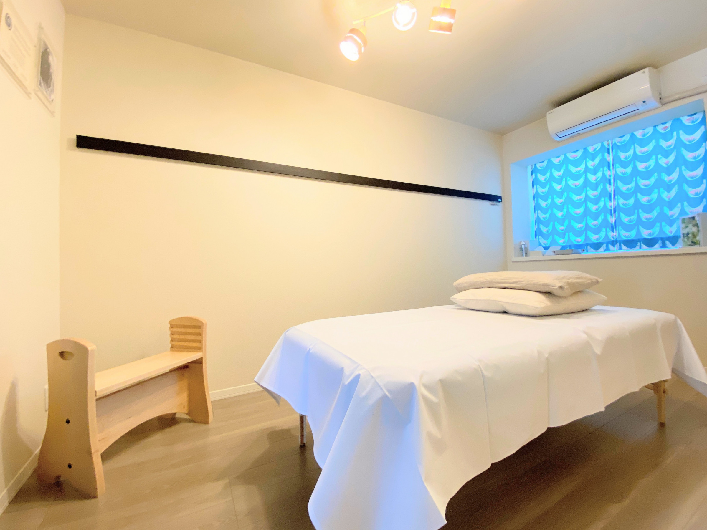
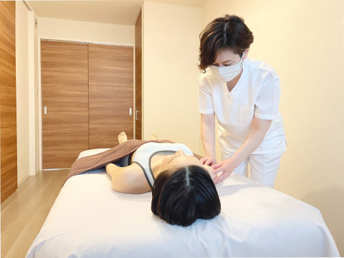
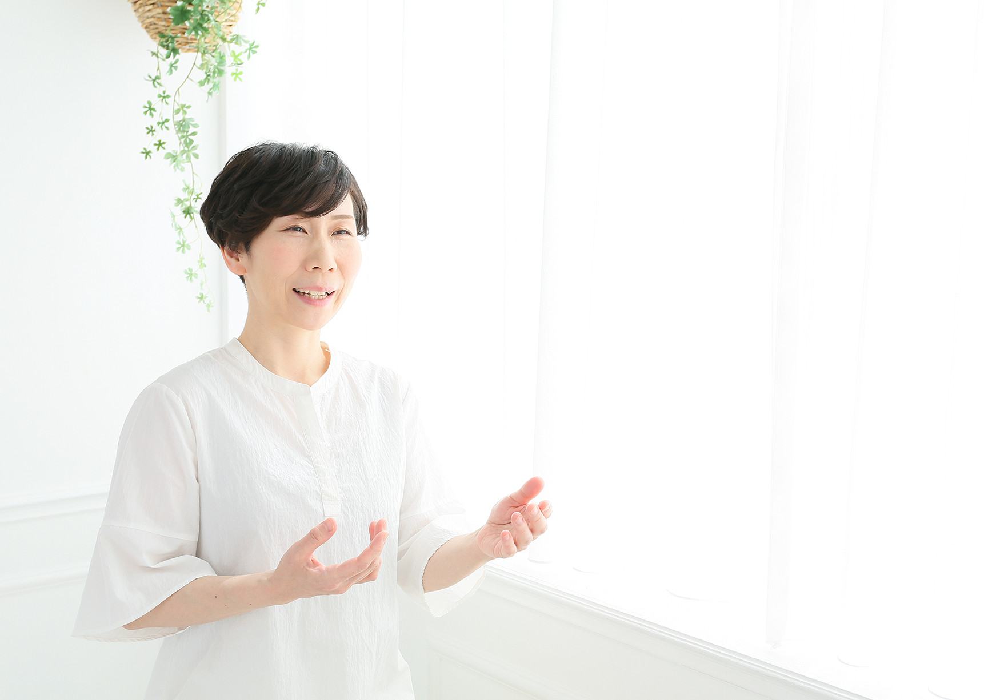
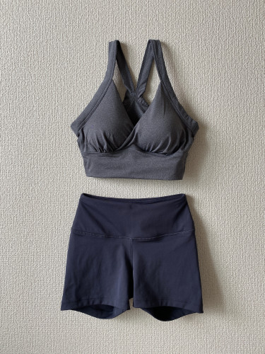

初回で「息がしやすくなった」と実感。7回目の顔の施術後は視界が広がり、目がすっきりしました。セッション終了後、「自分の身体と向き合える」という心理的な変化も経験しました。細やかな心遣いと丁寧な説明がとても印象的でした。

Structural Integration
からだは、
もっと自由になれる。
ロルフメソッドは、呼吸の仕方、立ち方、歩き方——
さまざまな「在り方」に変化をもたらすボディワークです。
女性のための整体サロン
Rolf Trailロルフトレイル
JR甲子園口駅すぐ／レンタルスペースにて営業中
JGSI公認ロルフプラクティショナー・西村智子が、米国の生化学者アイダ・ロルフ博士の考案したボディワーク「ロルフメソッド（ストラクチュラル・インテグレーション）」を提供しています。身体の深部に働きかける施術により、呼吸の深さ、姿勢改善、疲れにくさなど、心身への前向きな変化が現れます。
For You
こんなお悩みは ありませんか？
- 慢性的な肩こり・首のこりに悩んでいる
- 腰痛が繰り返し、なかなか改善しない
- 姿勢が気になる、猫背を直したい
- 呼吸が浅い、身体に余分な力みがある
- 整体やマッサージに通っているが、効果が一時的
- 身体の使い方をもっと良くしたい
- 芸術・武道・スポーツのパフォーマンスを高めたい
Rolf Method
ロルフメソッドとは

アイダ・ロルフ博士
米国の生化学者、アイダ・ポーリン・ロルフ博士が開発したボディワーク。「重力と調和してより楽に生きられる在り方」を目指し、全身の筋膜に働きかけることで緊張を手放します。
筋膜へのアプローチ
筋膜は、全身に張り巡らされている膜状の結合組織。主にコラーゲンでできており、その85%が水分で、全ての器官を支えています。デスクワークやストレスで筋膜が歪み固まると、身体全体のバランスが崩れていきます。
全10回のセッション
4ヶ月で全10回のセッションを実施。施術者が手や肘を使い筋膜を伸ばし、本来の位置に戻るように働きかけます。呼吸の深さ、姿勢改善、疲れにくさなど、心身への前向きな変化が現れます。
Features
Rolf Trail の特徴

古典派のロルフメソッド
アイダ・ロルフ博士が確立した原典的なロルフメソッドを提供。流行に左右されない、正統な技術と知識で施術を行います。
完全プライベート空間
個室レンタルスペースを利用し、お客様同士がお顔を合わせることのないよう、予約体制を整えています。女性が安心して施術を受けられる環境です。
JGSI公認ロルフプラクティショナー（国際資格）保有者による施術
JGSI公認ロルフプラクティショナーの資格を持つ施術者が、丁寧なカウンセリングとともに施術を行います。継続的な学びで技術を更新し続けています。
Practitioner
施術者プロフィール

JGSI公認ロルフプラクティショナー（国際資格）
西村 智子Tomoko Nishimura
2003年よりヨガ・ピラティスインストラクターとして活動。慢性的な痛みや膝関節の変形など、自身も身体的な課題を抱えていました。
2015年にロルフメソッドと出会い、10回のセッションを通じて呼吸が深くなり、膝関節の変形が軽減され、足の裏の痛みと疲れがなくなりました。原因不明の疲労感から解放され、全身が軽く動きやすくなり、とても嬉しかったことを覚えています。
2016年より3年間の就学を経てJGSI公認ロルフプラクティショナー資格を取得。2019年にサロンを開業し、現在は甲子園口のレンタルスペースにて営業中。
- 保有資格
- JGSI公認ロルフプラクティショナー（国際資格）
Voice
お客さまの声
3回目以降、施術箇所から離れた部位に「空気が入っていく感覚」を感じました。各セッション後に呼吸が深くなり、身体が伸びた感覚に。10回を終えるころには、ネガティブな感情を客観視できるようになり、楽に生きられるようになりました。
上半身だけの施術でも肩が開き、呼吸が深くなりました。セッション後に立つことと歩くことが楽になり、足が地に着いた感覚を得ました。アスリートにも推奨できるレベルの効果だと感じています。
Price
料金・メニュー
トライアルセッション
90分 ＋ カウンセリング30分
13,000円
初回1回限りの単発セッション。はじめてロルフメソッドを体験される方へ。
ベーシック10
90分 ／ 全10回（約4ヶ月）
13,000円／回
※ 料金は1回あたりの金額です
初回のみカウンセリング30分つき。全身を段階的に調整するロルフメソッドの基本コース。
ポスト10
90分 ／ 全4回（約2ヶ月）
13,000円／回
※ 料金は1回あたりの金額です
ベーシック10終了後の発展コース。状態により3回になる場合があります。
※いずれも状態により30分程度延長になる場合があります。
（追加料金はいただきません。）

Clothing
お受けいただく際の服装について
無料のレンタルウェアをご用意しております。毎回ご予約の際にサイズをご指定ください。
Sサイズ〜 3Lサイズまでご用意しております。
※ご不安な点は、ご予約時にお気軽にお問い合わせください。
Information
事前にご確認ください
遅刻・キャンセルについて
日時変更・キャンセルは、ご予約日の3日前までにご連絡ください。3日前を過ぎますと、レンタルスペースへのお支払い分としてキャンセル料金を頂戴いたします（公共交通機関の遅延や運休を含む）。予めご了承ください。
尚、15分以上の遅刻はキャンセル扱いとさせていただきます。
レンタルスペースの延長ができず、施術のお時間を十分に確保できないためです。
ご不明な点がございましたら、お気軽にLINEでご質問ください。
施術をお受けいただけない方
安全のため、施術をお受けいただけない症状・状態がございます。該当されるかご不明な場合は、事前にLINEでご相談ください。
該当する症状・状態を確認する
- 血栓・塞栓・動脈瘤
- 血友病
- がん（癌腫・肉腫・造血器腫瘍［白血病・悪性リンパ腫・骨髄腫］）— 完治から5年以内
- 感染症
- リーキーガット症候群（腸管壁浸漏症候群）
- 骨粗鬆症
- コルチゾンでの治療中（3ヶ月以上あけること）
- その他炎症を伴う症状
- 妊娠中もしくは妊娠の可能性がある場合
- 各種ワクチンを接種される場合、前後1週間以上期間を空けてご予約ください（副反応がある場合はお控えください）
尚、肌の広い範囲に直接触れての施術となりますので、下記の症状のある場合もお断りしております。
感染性疾患・感染性皮膚炎・水虫・ヘルペス
Access
所在地・アクセス
- 最寄り駅
- JR甲子園口駅 徒歩1分
- 住所
- 兵庫県西宮市甲子園口（レンタルスペース）
※ご予約時に詳細をお知らせします - ご予約
- 水・木・土曜日
11:00〜19:00※最終受付 17:00 - LINEよりご連絡ください